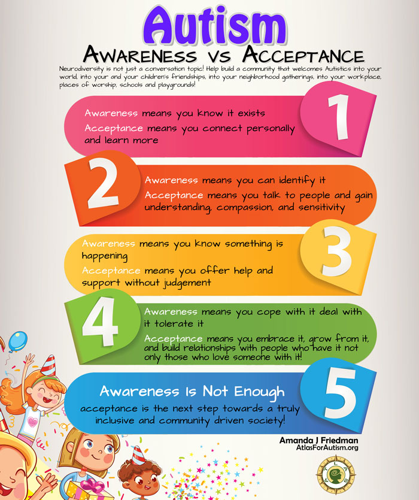

Many people are uneducated about what autism truly is. This causes distress and mistreatment to those who are experiencing autism. Through research and surveys, it is shown that although many individuals are aware of autism and learning disabilities, not many people know what autism is and how it affects individuals.
Many college students see their fellow ASD peers as “different”, or only seem to befriend them if they have a family member with ASD. These studies were conducted at large, diverse schools and researchers were looking for “correctness” in answers to see how educated people were on the disorder. The article “Brief Report: Autism Awareness: Views from a Campus Community” explains these research methods and their results. The article states “Twelve (1.1%) of the 1,057 respondents self-reported having an autism spectrum disorder, and an additional 124 (11.7%) reported having an immediate family member with autism.” 90% of the individuals that responded have experienced some college or even further education, meaning that majority of respondents are very educated. Many respondents correctly observed that autism is increasing, but wrongfully blamed it on vaccines.
Results
Six statements that stuck out to researchers were, “There is one intervention that works for all children with autism” (which was incorrect), “It is important that all children with autism receive special education services” (which was correct), “Children with autism can grow up to live independently” (which was also correct), “Changing a child’s diet will lessen the severity of autism symptoms” (incorrect), “Autism runs in families” (correct), and “All children with autism display poor eye contact” (incorrect). Respondents with autism or respondents that have autism in their families scored much higher than other respondents.
With that being said, not many people are fully educated on autism. It is becoming more common for individuals with autism to go off to college and further their education. In order for them to be successful and comfortable, people need to be educated on what autism is and acknowledge autistic individuals. Although many survey questions were answered correctly, there were also many answered incorrectly which shows that the majority of individuals are not fully educated on autism.
Aiming for Acceptance
 Awareness vs. Acceptance flow chart by Amanda J. Friedman: Friedman, Amanda J. “Autism Infographics - Informative & Fun.” Atlas Foundation For Autism, http://www.atlasforautism.org/featured/infographics/.Autism awareness is needed, but acceptance has to follow it. As we see in the above infographic this step is towards a better society and it is necessary for the future.
Information from SpringerLink 'Brief Report: Autism Awareness: Views from a Campus Community' · Image from Atlas Foundation for Autism